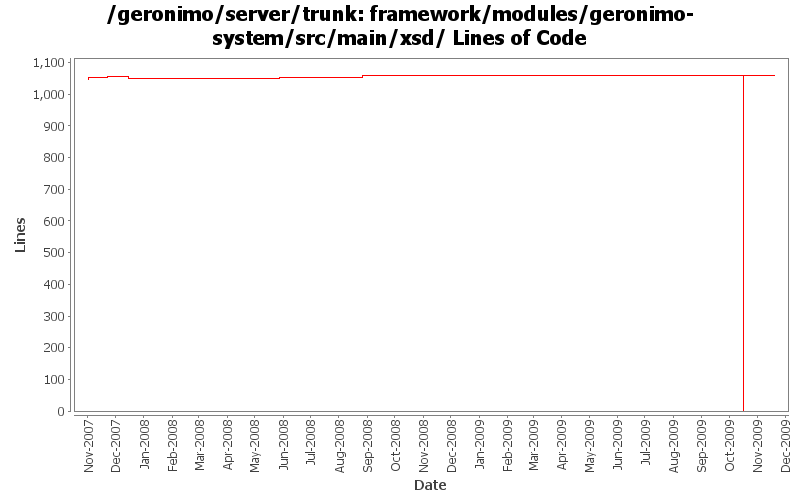

[root]/framework/modules/geronimo-system/src/main/xsd

| Author | Changes | Lines of Code | Lines per Change |
|---|---|---|---|
| Totals | 15 (100.0%) | 1094 (100.0%) | 72.9 |
| djencks | 11 (73.3%) | 1082 (98.9%) | 98.3 |
| linsun | 1 (6.7%) | 9 (0.8%) | 9.0 |
| gawor | 1 (6.7%) | 3 (0.3%) | 3.0 |
| gdamour | 2 (13.3%) | 0 (0.0%) | 0.0 |
Remove nested dependency structure as osgi figures out its own wiring
0 lines of code changed in 1 file:
GERONIMO-4916 step 2 move sandbox osgi framework into trunk
1060 lines of code changed in 2 files:
GERONIMO-4916 step 1 remove old framwork
0 lines of code changed in 2 files:
related to GERONIMO-4265 - allow a geronimo plugin to be a geronimo plugin group when module-id is not null
9 lines of code changed in 1 file:
update xsd:documentation with proper xsd namespaces and locations (GERONIMO-4075)
3 lines of code changed in 1 file:
GERONIMO-3607 Large cleanup of code for extracting assemblies from running servers. Should greatly improve dealing with snapshots in local maven repos. Also changes meaning of plugin dependency start flag to override plugin load flag.
5 lines of code changed in 1 file:
GERONIMO-3605 sync with current gshell, use consoleReader more, cache more, allow a comment for a module in config.xml in plugin metadata.
9 lines of code changed in 2 files:
Add a convenience PropertyEditor, JavaBeanXmlAttributeEditor, which is
intended to be used as a base class for property editors of JavaBeans
defined as gbean xml-attributes. This base property editor is able to
skip the "xml-serialization" of properties whose read methods are annotated
with @DoNotPersist. It is also able to encrypt prior xml-serialization the
properties whose read methods are annotated with @EncryptOnPersist.
It is now possible to declare a propertyEditor on a config.xml gbean attribute.
This property editor is used to retrieve the value of the attribute based
on its mixed-content. Combined with the above convenience PropertyEditor, it
is now easy to override gbean attributes defined by Java xml-attribute in
configuration plans.
Write a BasicExtendedJMXConnectorInfoEditor to allow the override of the
extendedJMXConnectorInfo attribute of BasicNodeInfo. Users can now easily
declare new nodes within the clustering configuration.
Fixes GERONIMO-3610 - Allows the override of XML JavaBean attribute in
config.xml
0 lines of code changed in 2 files:
GERONIMO-3502 Allow conditions on starting plugins to be specified in geronimo-plugin.xml
8 lines of code changed in 1 file:
GERONIMO-3579 Configure which config.xml and properties files info from the plugin xml goes into
0 lines of code changed in 2 files: